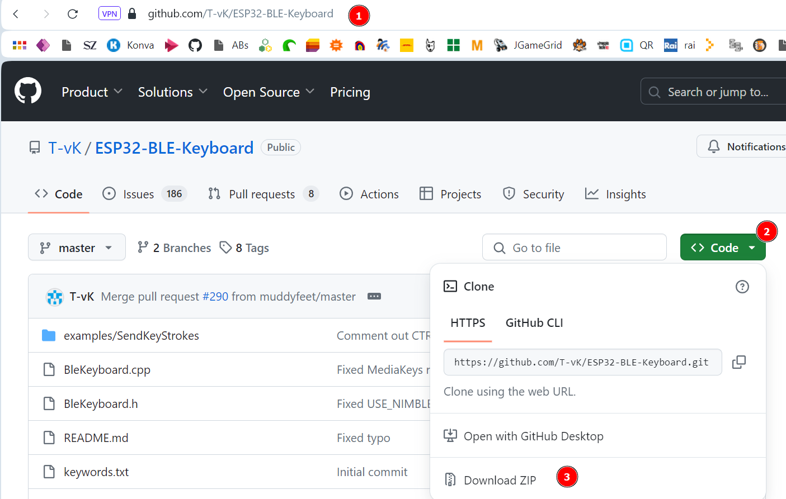

Der Joystick soll jetzt über Bluetooth an den Computer angeschlossen werden und die Tastatursignale senden.
Wir verwenden hierbei den Standard Bluetooth-Low-Energy (BLE), mit dem üblicherweise Tastaturen, Mäuse oder andere Eingabegeräte, die nur wenig Daten erzeugen, angeschlossen werden.
Für die Programmierung benötigen wir eine Bibliothek, die du auf dieser Internetseite herunterladen kannst: https://github.com/T-vK/ESP32-BLE-Keyboard

Speichere die ZIP-Datei an einem Ort, an den du sie wiederfindest.
Anschließend müssen wir diese Bibliothek in unseren Sketch importieren:
Kopiere diesen Code in deinen Sketch
#include <BleKeyboard.h>
BleKeyboard bleKeyboard;
int pinX = 12;
int pinY = 14;
void setup() {
pinMode(pinX, INPUT);
pinMode(pinY, INPUT);
Serial.begin(115200);
// Bluetooth einschalten -> Wartet auf Kopplung
bleKeyboard.begin();
}
Hier binden wir die Bibliothek in den Sketch ein, die wir vorher importiert haben.
Wir erzeugen ein Objekt bleKeyboard der Klasse BleKeyboard, mit dem wir anschließend weiter arbeiten können.
Der ESP32 arbeitet jetzt als BLE-Gerät und versucht sich mit einem Endgerät (Computer, Handy, etc.) zu koppeln.
void loop() {
if (bleKeyboard.isConnected()) {
int x = analogRead(pinX);
int y = analogRead(pinY);
if (x > 3000) {
Serial.println("Links");
bleKeyboard.press(KEY_LEFT_ARROW);
delay(50);
} else if (x < 1000) {
Serial.println("Rechts");
bleKeyboard.press(KEY_RIGHT_ARROW);
delay(50);
}
if (y < 1000) {
Serial.println("Hoch");
bleKeyboard.press(KEY_UP_ARROW);
delay(50);
} else if (y > 3000) {
Serial.println("Runter");
bleKeyboard.press(KEY_DOWN_ARROW);
delay(50);
}
bleKeyboard.releaseAll();
}
}
Der Code wird nur ausgeführt, wenn eine Bluetooth-Verbindung aufgebaut wurde.
Der ESP32 sendet den entsprechende Tastencode an den Computer - in diesem Fall den Code für die linke Cursor-Taste.
Mit diesem Befehl wird die Taste wieder gelöst - damit kann ein erneuter Tastendruck gesendet werden.
Wenn du den Sketch auf den ESP32 hochgeladen hast, ist das Gerät bereit, sich mit einem Computer zu koppeln.
Am Rechner musst du jetzt in den Bluetooth-Einstellungen nach einem ESP32-Keyboard suchen und dieses Gerät koppeln.
Anschließend sollte sich der Cursor mit dem Joystick bewegen lassen und du kannst Pac Man spielen:
Google Pac Man